GitHub Project
김한솔 : 석준선배 아까 index.html 만든 것좀 보내주세요.
석준 선배 : 아 이게 최신판이였던가....? 아 덮어 씌운듯...ㅈㅅ
김한솔 : 이런 XX
위의 같은 상황은 협업을 할 때 일어나는 현상입니다. 보기만해도 굉장히 끔찍합니다.
이러한 현상을 막기 위해 Git을 사용하는 것입니다. 그렇다면 Git은 무엇일까요?
Git은 소스코드관리를 해주는 버전 관리 시스템을 뜻합니다.
Git을 사용하면 메일이나 usb로 소스코드를 전해줄 필요가 없습니다. 그저 파일을 올리고 그 파일을 받으면 끝일 뿐입니다.
때문에 여러명이 동시에 작업하기 편합니다. 또한 버전 관리에도 좋아서 지난 시점의 버전을 다운 받을 수도 있습니다.
저장소(Repository)
저장소는 소스코드가 실질적으로 저장되는 곳입니다. 여러개의 브랜치가 모여있고 git clone이나 download zip 을 통해 다운 받을 수 있습니다.
우선 git clone 으로 소스를 받아오려면 받아올 폴더를 만들어줍니다.
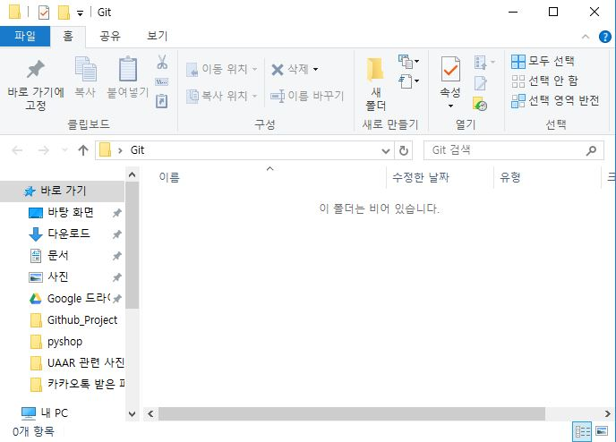
폴더를 만든 후 아래의 사진 처럼 git bash를 실행시키고 그 경로를 소스를 받아올 폴더로 바꿔줍니다. (마우스 우클릭 후 여기에서 git bash 실행을 누르셔도 됩니다.)
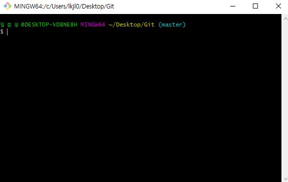
이제 github 페이지에 가서 다운 받아올 저장소에 들어가 복제할 코드를 복사해옵니다.
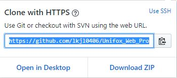
이제 다시 git bash를 열고 git clone 복사한 주소 를 입력해주세요.
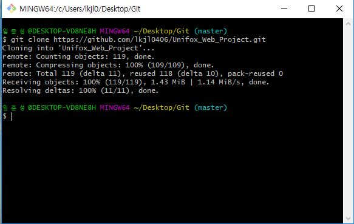
아까 만들었던 Git 폴더에 들어가서 보면 복제가 잘 되어 있는 모습을 볼 수 있습니다.
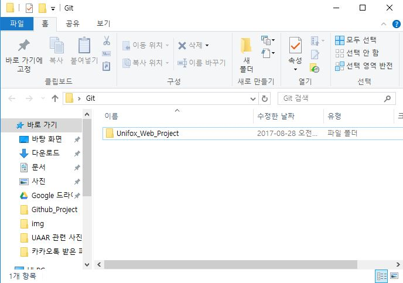
이 방법말고 download zip을 통해 다운 받는 방법은 정말 간단합니다.
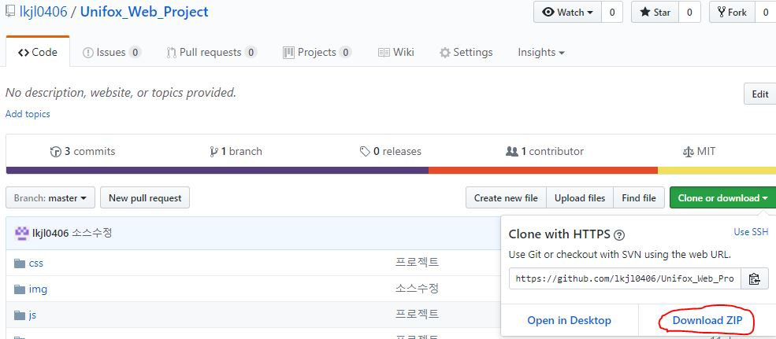
그냥 빨간색으로 표시된 zip파일을 눌러서 다운 받고 압축을 푸시면 됩니다.
파일 올려보기
파일을 올리려면 많은 과정을 거쳐야합니다. 우선 올릴 폴더를 만들고 그 폴더의 위치에 git bash를 실행시킨 후 아래의 사진 처럼
자신의 github 사이트 정보를 입력해줍니다.
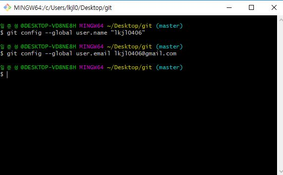
이제 git init 이라는 명령어를 입력해줍니다.
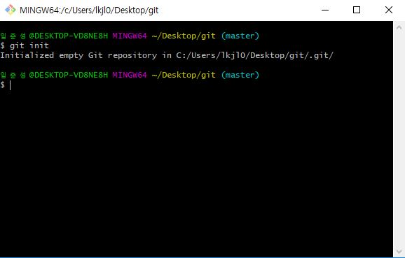
위의 작업은 로컬저장소로 사용할 폴더를 만드는 것입니다. 작업이 잘 되었다면 폴더에 .git이라는 폴더가 보일 것입니다.
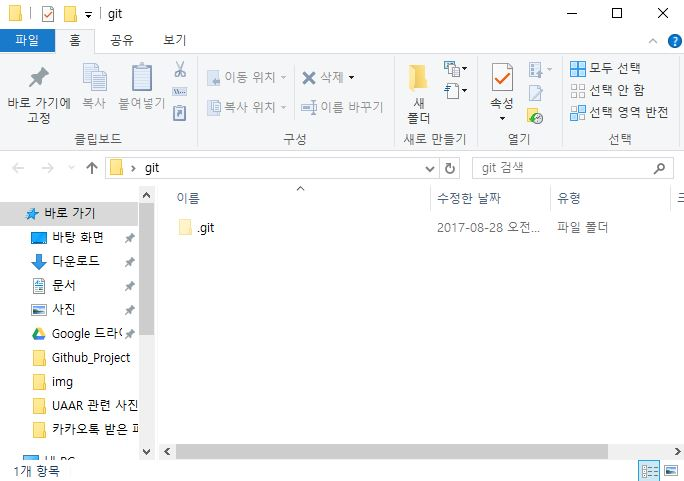
만약 이 폴더가 보이지 않는다면 숨김 폴더를 표시하는 설정을 안해서 그럴것 입니다.
이제 폴더에 올릴 아무 파일이나 만들어주세요. 저는 AAA.text를 올리겠습니다.
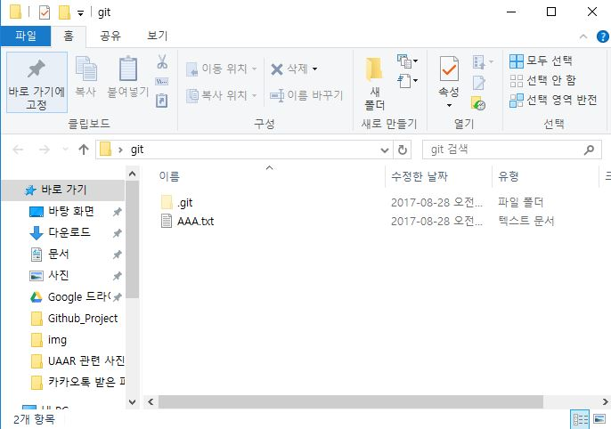
다시 git bash를 열고 git add * 를 입력해줍니다.
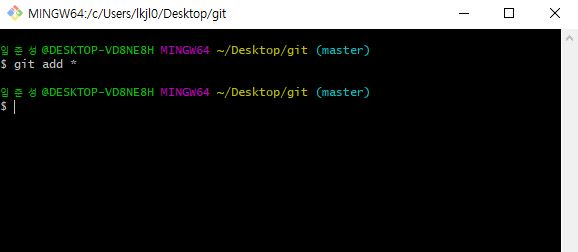
위의 작업은 저장소에 올릴 파일을 추가한 것이고 추가를 할 때는 git add 파일이름 이렇게 하실 수 있습니다. 위의 명령어에서는 '*' 를 입력했는데
*은 모든 파일을 뜻합니다.
이제 git에 폴더가 잘 올라와있는지 git status 라는 명렁어를 입력해줍니다.
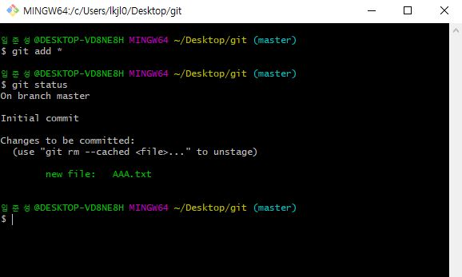
AAA.text가 있는 것을 볼 수 있습니다. git status 라는 명령어는 현재의 상태를 보여줍니다.
이제 commit을 할 차례입니다. 명령어에 git commit -m "AAA.text 올라감" 이라고 입력해주세요.
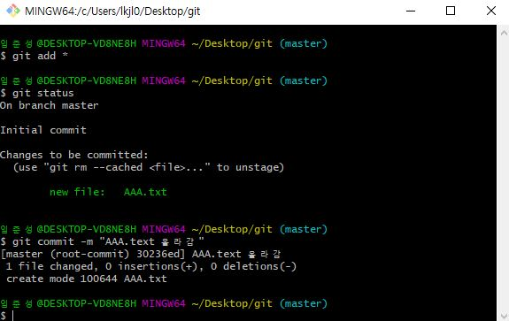
commit 은 파일을 올릴 때 어떤 파일이 올라갔는지 전 버전과 변경사항은 무엇인지 문구를 써주는 명령어입니다.
commit을 했으면 이제 git push 명령어를 사용하여 저장소에 올릴 차례만 남았습니다.
하지만 파일을 어디에 올릴지 경로를 설정하지 않았으므로 git push를 할 경우 아래의 사진 처럼 에러가 납니다.
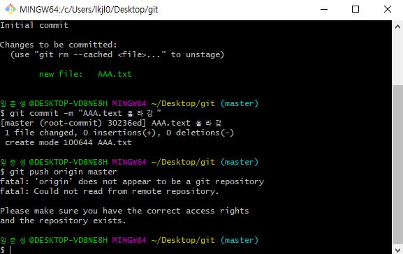
그래서 경로를 설정해주는 명령어인 remote 를 해주어야 합니다. 저는 test라는 저장소에 올릴 것입니다.
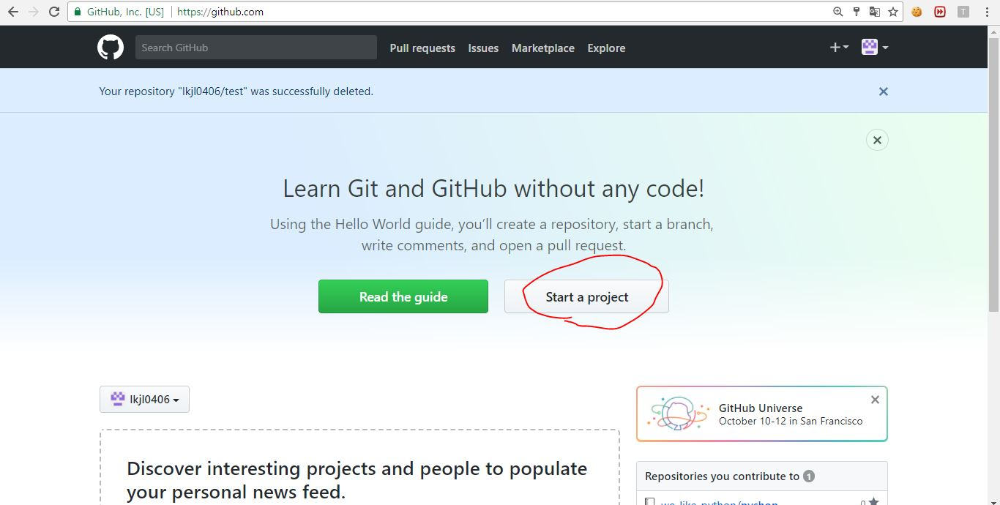
Start a project 를 클릭하고 프로젝트의 이름을 정해줍니다.
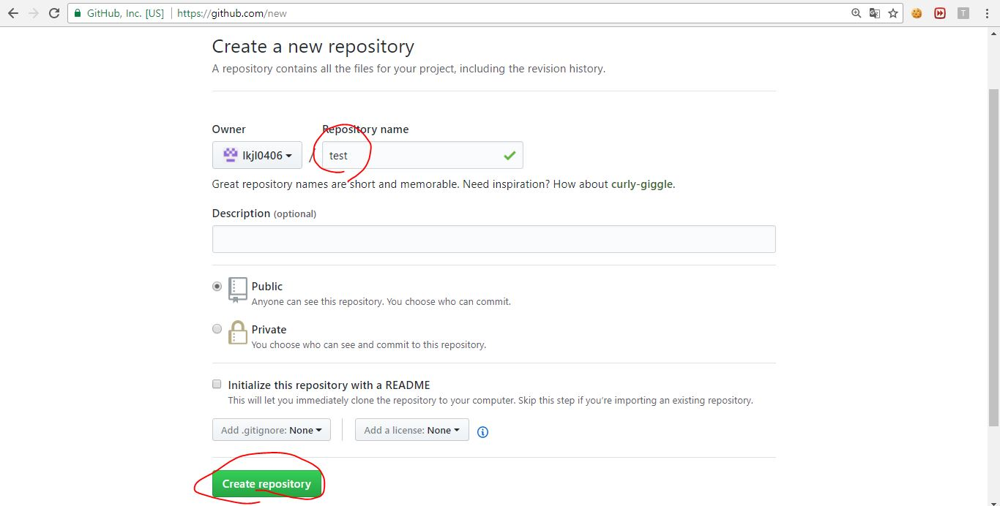
이제 이 저장소의 주소를 복사합니다.
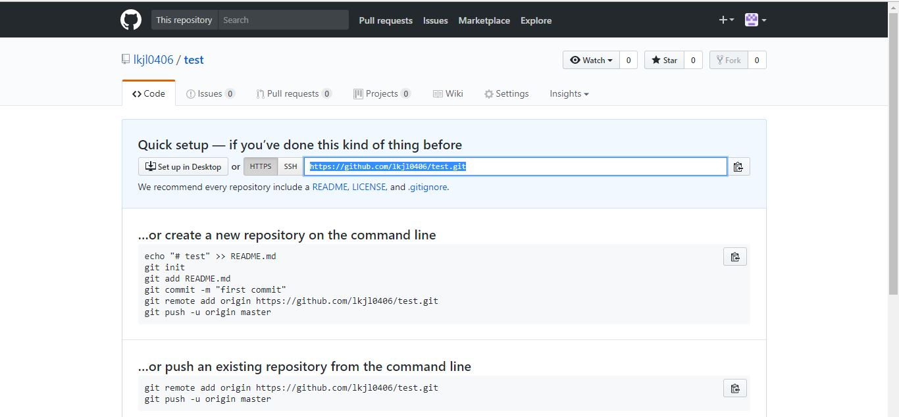.
모든 준비는 끝났습니다. 다시 git bash 를 실행하고 git remote add origin 복사한 주소 를 입력해주세요
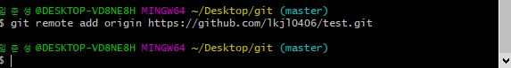
이제 git push 명령어를 사용하여 git add 했던 파일을 git commit 했던 메세지와 함께 업로드 할 수 있습니다.
git push -u origin master 를 입력해주세요
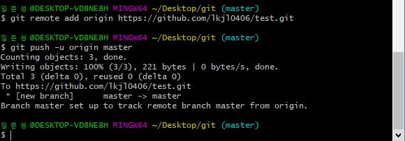
이제 github 사이트에 가서 파일이 올라와있는지 보면
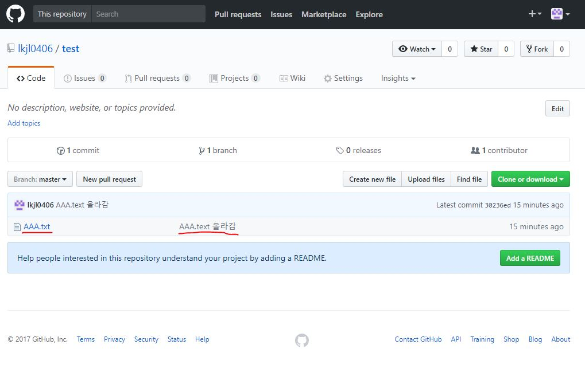
위의 사진 처럼 잘 올라와있습니다.
가지(branch)
가지(branch)는 무엇일까요? 예를 들어서 쇼핑몰을 만드는 협업 프로젝트가 있다고 가정합시다. 팀원은 A,B,C 라는 사람으로 이루어져 있고 A는 메인화면, B는 로그인, 회원가입 페이지 C는 구매 페이지를 만든다고 가정합시다. A,B,C 셋 다 모두 자기가 맡은 개발을 끝냈습니다. 그럼 이제 git에 push를 해야 하는데
세명 모두가 master branch에 push를 하면 어떻게 될까요? 세 새의 소스가 병합되지 않고 분할되어 master branch에 업로드 될 것입니다. 이렇게 각 파트별로
분할하기 위해서 있는 것이 가지(branch) 입니다.
방금 올린 파일은 master라는 가지에 올라갔습니다.
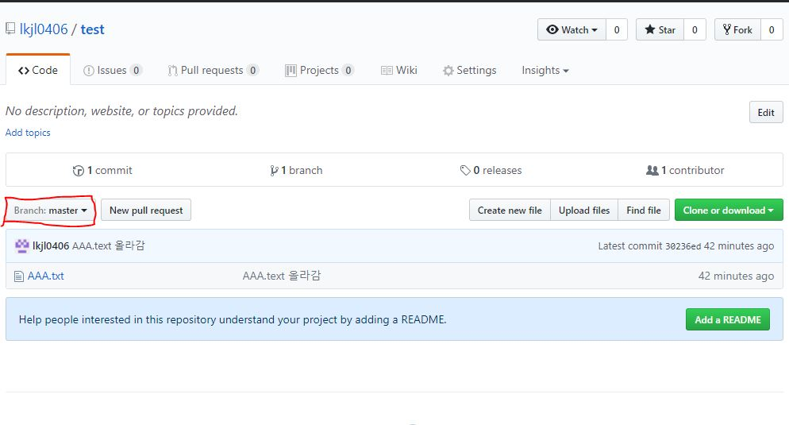
이제 test1 이라는 이름의 branch를 만들어보겠습니다.
branch는 아래의 사진 처럼 클릭해서 만들 수 있습니다.
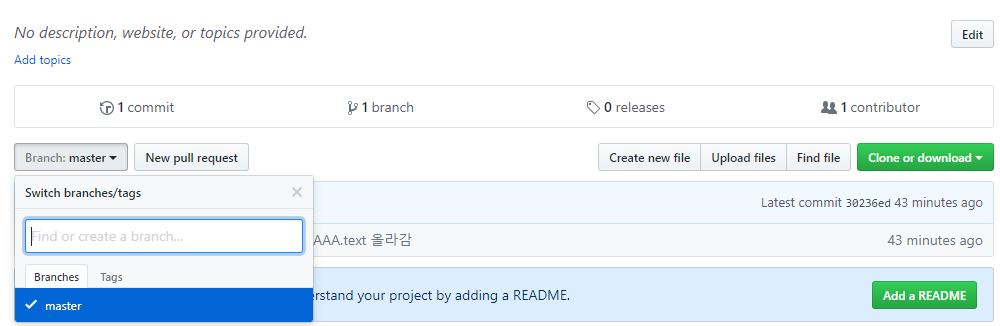
혹은 git bash 를 열고 git checkout -b test1 이라고 입력을 하면 test1이라는 branch가 만들어지고 그 branch로 이동할 수 있습니다.
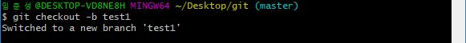
이제 새로 만든 test1 branch 에도 파일을 올려보겠습니다. 아까 했던 git add * 와 git commit "메세지" 를 입력하고 git push 를 해야합니다.
지금은 branch가 master가 아니기 때문에 git push origin test1 를 입력해야합니다.
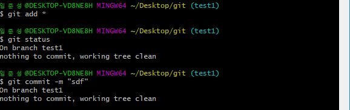
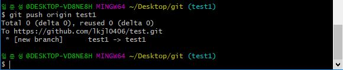
이렇게 새로만든 branch에도 push를 할 수 있습니다.
갱신과 병합
git push 명령어는 파일을 업로드 하는 것입니다.
그렇다면 git pull 명령어는 무엇일까요? 반대의 의미로 다운로드하는 것입니다. 이 과정에서 폴더에 있던 프로그램의 내용은 갱신되고 병합됩니다. 이렇게 받아온 것은 로컬 저장소(master)에서 받아온 것이고 자신이 원하는 branch에서 받아올려면 git merge 가지이름 을 입력하면 됩니다. 하지만 여기서 파일들끼리 충돌할 수도 있습니다. 그럴땐 오류 문장을 보고 최대한 고쳐보고 안될 경우에는 구글링....ㅎㅎ